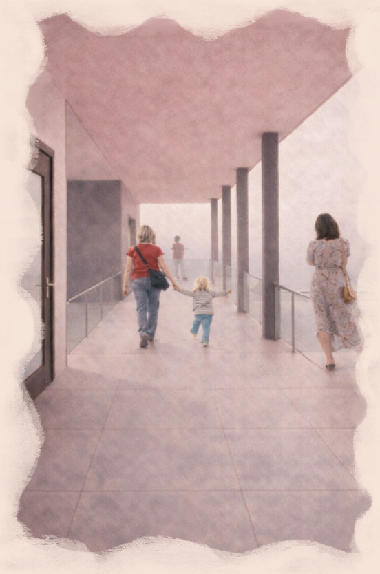
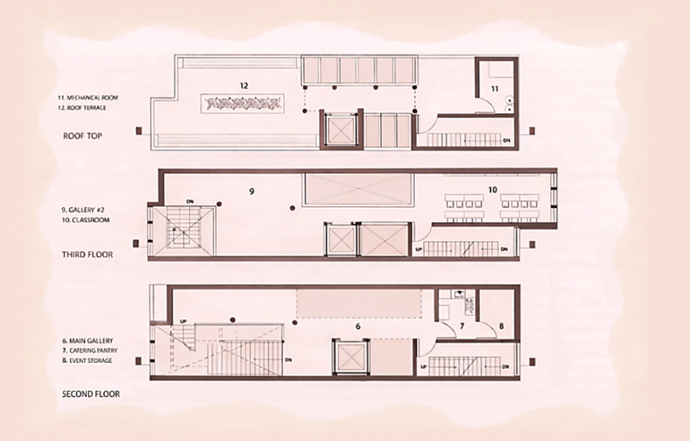
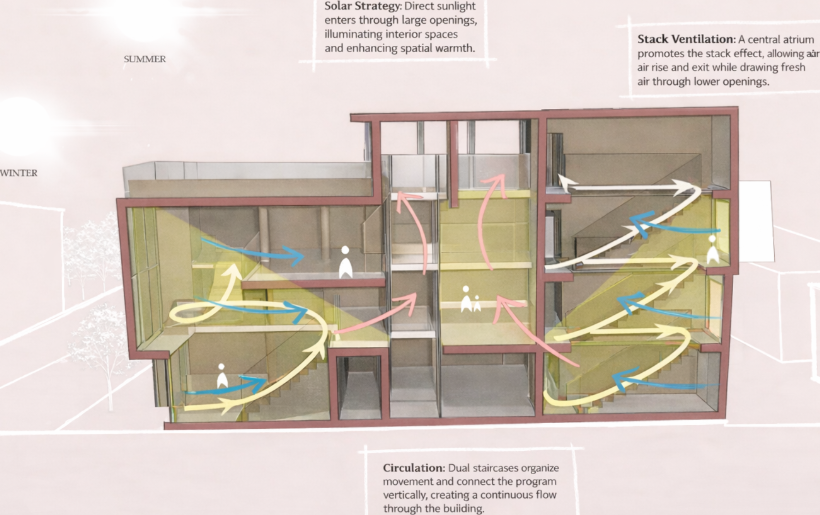
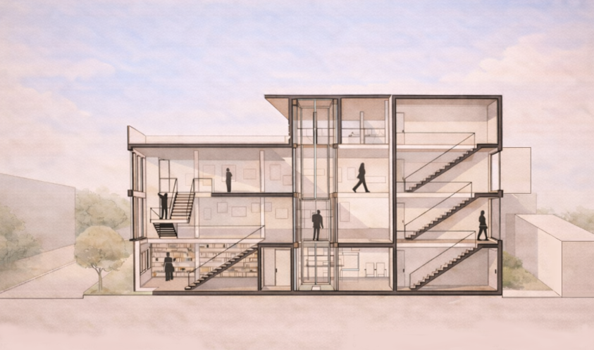
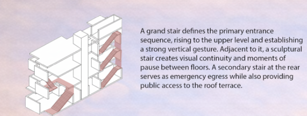
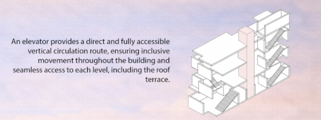
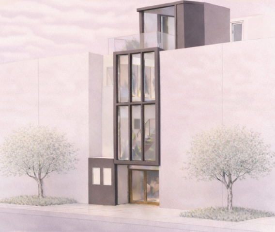
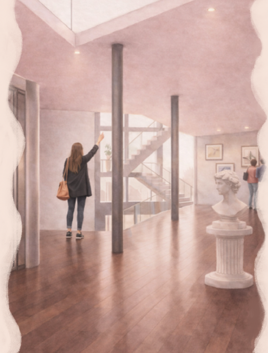

Palimpsest
A study in layered urbanism and atmospheric depth
A building that reveals itself in layers—exploring how overlapping spaces, volumes, and light create depth and discovery within a compact urban site.
Offset forms and partial levels extend beyond the limits of the footprint, producing a spatial experience that feels both expansive and intimate.
Inside, the atmosphere shifts through movement: compressed zones open into a tall, luminous volume that invites exploration and reflection. Natural light filters through skylights and subtle overhangs, revealing textures and layers across surfaces.
The sequence culminates at the roof terrace—the project’s final layer—where the space opens to sweeping views of the river and the city beyond.

01 / Spatial Organization
Ground Floor Plan

Upper Levels & Roof Plan

02 / Formulation
Form Diagram — Phase 1

Form Diagram — Phase 2

Form Diagram — Phase 3

Environmental Diagram

03 / Atmosphere & Details
Section Perspective

Section illustrating spatial relationships across levels
Circulation Diagram


Primary and secondary circulation systems
Exterior Render

Final proposal viewed from street level

Through this project, I began to understand architecture not as isolated objects, but as layered conditions shaped over time. Rather than existing independently, each intervention becomes part of an ongoing dialogue, where traces of what came before continue to inform what is added.
Palimpsest becomes both a method of analysis and a strategy for design—one that embraces accumulation, adaptation, and reinterpretation. In this way, architecture is approached not as a final product, but as a continuous process of layering, revealing, and transforming space.